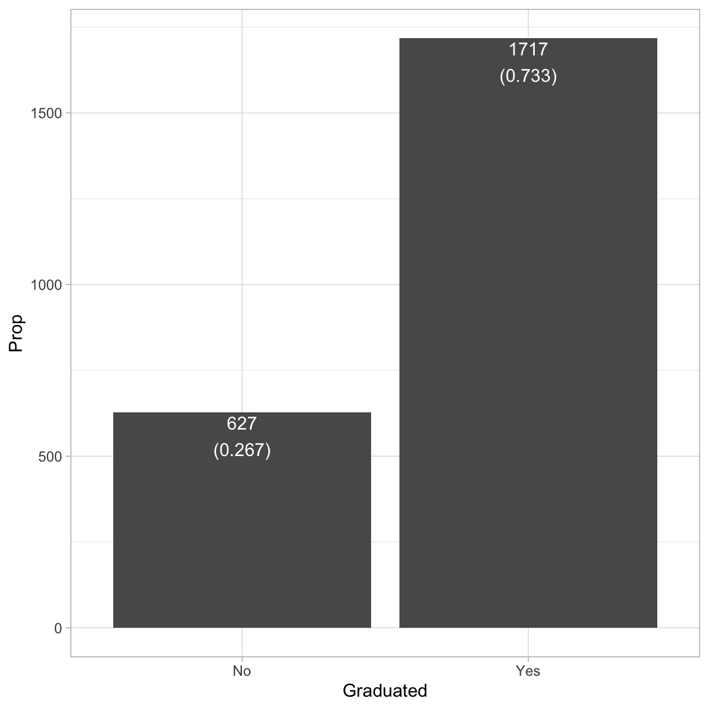
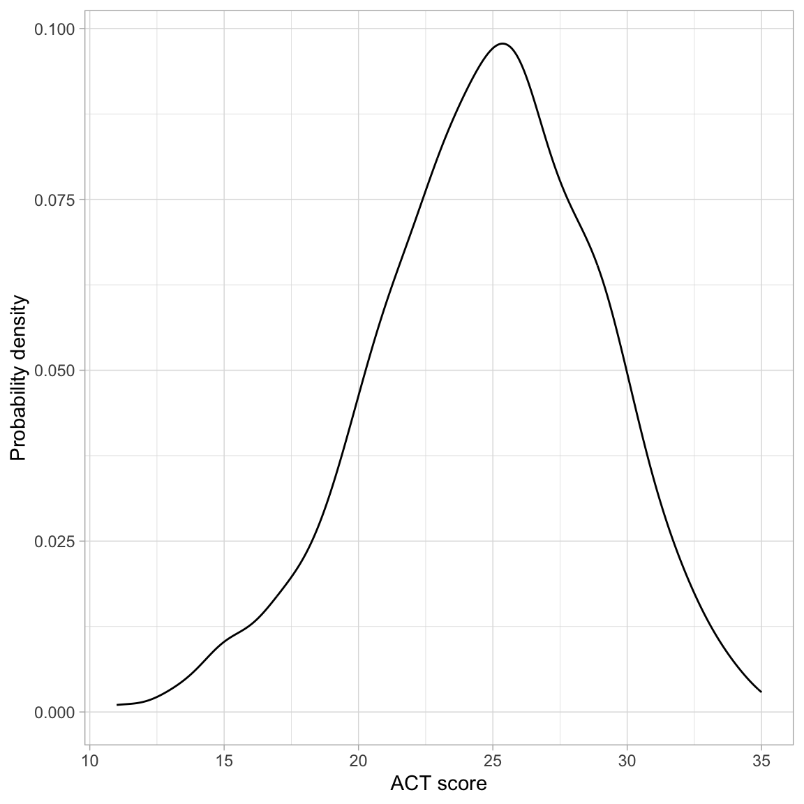
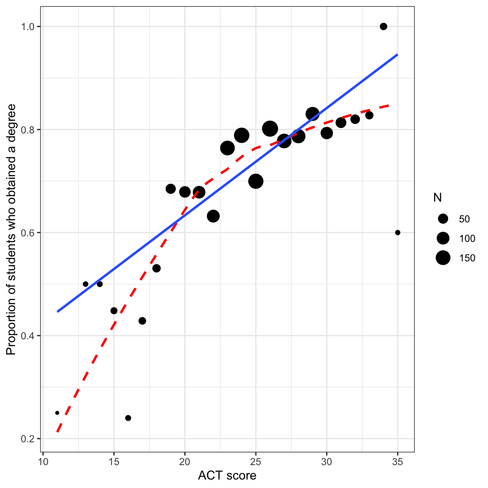
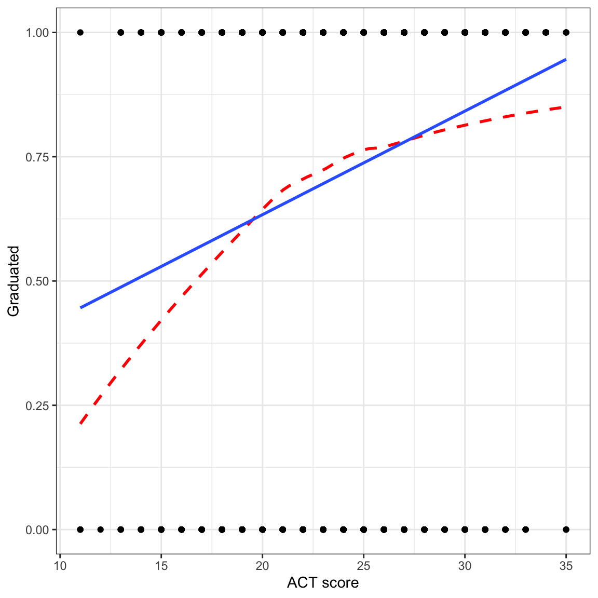
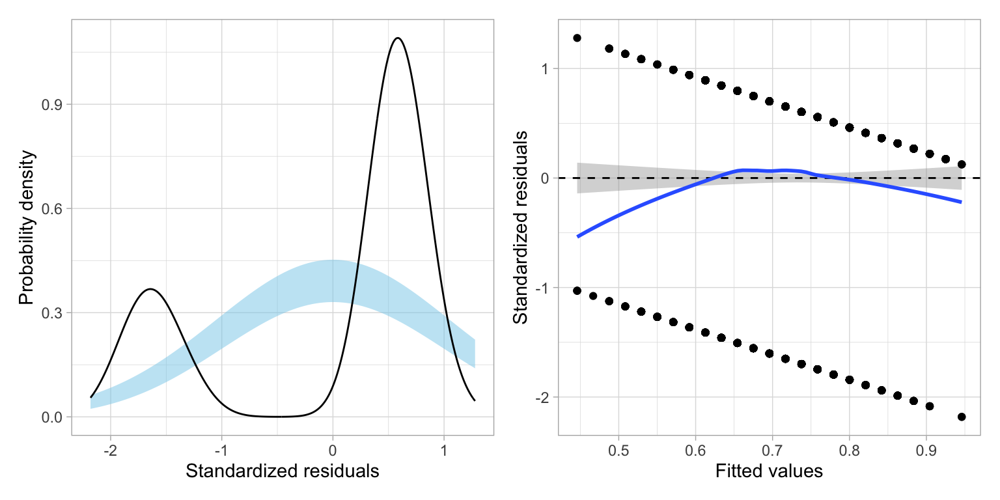

In this chapter, you will learn how about linear probability models, and why they are not typically used to model dichotomous categorical outcome variables (e.g., dummy coded outcome). We will use data from the file graduation.csv to predict variation in college graduation. See data codebook for additional infromation about the data.
# Load librarieslibrary(broom)library(corrr)library(educate)library(patchwork)library(tidyverse)# Read in datagrad =read_csv(file ="https://raw.githubusercontent.com/zief0002/fluffy-ants/main/data/graduation.csv")# View datagrad
# A tibble: 2,344 × 7
student degree act scholarship ap_courses first_gen non_traditional
<dbl> <chr> <dbl> <dbl> <dbl> <chr> <chr>
1 1 Yes 21 0 0 No No
2 2 Yes 19 0 0 No No
3 3 Yes 27 0 0 Yes No
4 4 Yes 25 0.5 0 Yes No
5 5 No 28 0 17 Yes No
6 6 Yes 21 0 0 No Yes
7 7 Yes 27 0 8 Yes No
8 8 No 20 0 0 No No
9 9 Yes 26 0 0 Yes No
10 10 Yes 25 0 4 Yes No
# ℹ 2,334 more rows
Note that in these analyses the outcome variable (degree) is a categorical variable indicating whether or not a student graduated.
13.1 Data Exploration
To begin the analysis, we will explore the outcome variable degree. Since this is a categorical variable, we can look at counts and proportions.
# Compute total number of casesnrow(grad)
[1] 2344
# Compute counts/proportions by outcome levelgraduated = grad |>group_by(degree) |>summarize(Count =n(), Prop =n() /2344 )# View resultsgraduated
# A tibble: 2 × 3
degree Count Prop
<chr> <int> <dbl>
1 No 627 0.267
2 Yes 1717 0.733
These counts or proportions could also be used to create a bar plot of the distribution. To do this we use the stat="Identity") argument to geom_bar() since the height of the bar (Count) is given in the data. (We aren’t computing it from raw data; rather from a summary measure that has already been computed.1) We also include the counts/proportions as text in the plot. To do this, we create a new column that includes the text we want to include.2
# New column with text to add to barsgraduated = graduated |>mutate(count_prop =paste0(Count, "\n(", round(Prop, 3), ")") )# Barplotggplot(data = graduated, aes(x = degree, y = Count)) +geom_bar(stat ="Identity") +geom_text(aes(label = count_prop), vjust =1.1, color ="white") +theme_light() +xlab("Graduated") +ylab("Prop")

Figure 13.1: Barplot showing graduation status for the sample.
The analysis suggests that most students in the sample (73%) tend to graduate. Because we ultimately want to use this variable in our analysis, we will need to create a numeric indicator variable for use in those analysis by dummy-coding the degree variable.
# A tibble: 2,344 × 8
student degree act scholarship ap_courses first_gen non_traditional
<dbl> <chr> <dbl> <dbl> <dbl> <chr> <chr>
1 1 Yes 21 0 0 No No
2 2 Yes 19 0 0 No No
3 3 Yes 27 0 0 Yes No
4 4 Yes 25 0.5 0 Yes No
5 5 No 28 0 17 Yes No
6 6 Yes 21 0 0 No Yes
7 7 Yes 27 0 8 Yes No
8 8 No 20 0 0 No No
9 9 Yes 26 0 0 Yes No
10 10 Yes 25 0 4 Yes No
# ℹ 2,334 more rows
# ℹ 1 more variable: got_degree <dbl>
We will also explore the act variable, which we will use as a predictor in the analysis.
# Density plotggplot(data = grad, aes(x = act)) +geom_density() +theme_light() +xlab("ACT score") +ylab("Probability density")# Summary measuresgrad |>summarize( M =mean(act), SD =sd(act) )
# A tibble: 1 × 2
M SD
<dbl> <dbl>
1 24.8 4.15

Figure 13.2: Density plot of the ACT scores.
The distribution of ACT scores is unimodal and symmetric. It indicates that the sample of students have a mean ACT score near 25. While there is a great deal of variation in ACT scores (scores range from 10 to 36), most students have a score between 21 and 29.
13.1.1 Relationship between ACT Score and Proportion of Students who Obtain a Degree
Recall that the regression model predicts the average Y at each X. Since our outcome is a dichotomous dummy-coded variable, the average represents the proportion of students with a 1. In other words, the regression will predict the proportion of students who obtained a degree for a particular ACT score. To get a sense for this, we can compute the sample proportion of students who obtained a degree for each ACT score from the data.
# Compute prop_grad = grad |>group_by(act, degree) |>summarize(N =n() # Compute sample sizes by degree for each ACT score ) |>mutate(Prop = N /sum (N) #Compute proportion by degree for each ACT score ) |>filter(degree =="Yes") |># Only use the "Yes" responsesungroup() #Makes the resulting tibble regular# View dataprop_grad |>print(n =Inf) #Print all the rows
In general, the proportion of students who obtain their degree is higher for higher SAT values. We can also see this same relationship by plotting the proportion of students who graduate versus ACT score.
# Scatterplotggplot(data = prop_grad, aes(x = act, y = Prop)) +geom_point(aes(size = N)) +geom_smooth(data = grad, aes(y = got_degree), method ="loess", se =FALSE, color ="red", linetype ="dashed") +geom_smooth(data = grad, aes(y = got_degree), method ="lm", se =FALSE) +theme_bw() +xlab("ACT score") +ylab("Proportion of students who obtained a degree")

Figure 13.3: Proportion of students who graduate conditional on ACT score. Size of the dot is proportional to sample size. The regression smoother (solid, blue line) and loess smoother (dashed, red line) are based on the raw data.
There are a few things to note here:
The regression line is based on the raw data rather than the proportion data. This is important because the sample sizes differ (e.g., there are far more students who have an ACT score near 25 than near 10).
Both the regression line and loess smoother indicate there is a positive relationship between ACT score and the proportion of students who graduate. This suggests that higher ACT scores are associated with higher proportions of students who graduate.
The loess smoother suggests there may be a curvilinear relationship between ACT score and the proportion of students who obtain their degree.
FYI
Because the regression is about the proportion of students who obtain their degree, the scatterplot we show should also indicate the proportion of students who graduate. Thus, when the outcome is categorical, we tend not to look at a scatterplot of the raw data in practice.
# Scatterplotggplot(data = grad, aes(x = act, y = got_degree)) +geom_point() +geom_smooth(method ="loess", se =FALSE, color ="red", linetype ="dashed") +geom_smooth(method ="lm", se =FALSE) +theme_bw() +xlab("ACT score") +ylab("Graduated")

Figure 13.4: Scatterplot of whether a student graduated versus ACT score. The regression smoother (blue, solid line) and loess smoother (red, dashed line) shows the positive relationship between ACT score and the proportion of students who obtain their degree.
Since the raw data can only have outcome values of 0 or 1, we don’t see many of the observations (this is called overplotting). More importantly, the regression line and loess smoother, which indicates the proportion of students who graduate is using a different scale (values between 0 and 1) than the raw data (only values of 0 or 1).Because of this scale incompatibility, this plot is generally not provided in practice.
We can also see the positive relationship between ACT score and the proportion of students who obtain their degree by examining the correlation matrix between the two variables. The correlation coefficient suggests a weak, positive relationship, but we interpret this with caution since the relationship may not be linear (as suggested by the loess smoother).
# A tibble: 2 × 3
term got_degree act
<chr> <dbl> <dbl>
1 got_degree NA 0.195
2 act 0.195 NA
13.2 Fitting the Linear Probability (Proportion) Model
We can fit the linear model shown by the regression line in the plot using the lm() function as we always have. The name of this model when we have a dichotomous outcome in a linear model, is the linear probability (proportion) model.
# Fit the modellm.1=lm(got_degree ~1+ act, data = grad)# Model-level- outputglance(lm.1)
where \(\hat{\pi}_i\) is the predicted proportion of students who graduate. (Note that we use \(\hat{\pi}_i\) rather than \(Y_i\) since the outcome is now a proportion rather than the raw outcome value.) Interpreting the coefficients,
On average, 0.22 of students having an ACT score of 0 are predicted to graduate. (Extrapolation)
Each one-point difference in ACT score is associated with an additional 0.02 predicted improvement in the proportion of students graduating, on average.
Let’s examine the model assumptions.
# Examine residual plotsresidual_plots(lm.1)

Figure 13.5: LEFT: Density plot of the standardized residuals from the linear probability model. The confidence envelope shows where we might expect the density to be if the population of residuals were normally distributed. RIGHT: Scatterplot of the standardized residuals versus the fitted values from the linear probability model. The loess smoother along with the confidence envelope is also displayed.
It is clear that the assumptions associated with linear regression are violated. First off, the residuals are not normally distributed. They are in fact, bimodal. The scatterplot of the residuals versus the fitted values also indicates violation of the linearity assumption, as the average residual at each fitted value is not zero. The only assumption that seems tenable is homoskedasticity.
13.3 Understanding the Residuals from the Linear Probability Model
Look closely at the scatterplot of the residuals versus the fitted values. At each fitted value, there are only two residual values. Why is this? Recall that residuals are computed as \(\epsilon_i=Y_i - \hat{Y}_i\). Now, remember that \(Y_i\) can only be one of two values, 0 or 1. Also remember that in the linear probability model \(\hat{Y}_i=\hat{\pi}_i\). Thus, for \(Y=0\),
This means that the residual computed using a particular fitted value can only take on one of two values: \(- \hat{\pi}_i\) or \(1 - \hat{\pi}_i\). Likewise, the standardized residuals can only take on two values for each fitted value.That is why in the plot of the standardized residuals versus the fitted values we do not see any scatter; there are only two possibilities for the standardized residuals at each fitted value.
Furthermore, the residual (and therefore the standardized residuals) are always the same distance apart for each fitted value, and get smaller for higher fitted values. This is why we see the two parallel strips (having negative slopes) in this plot.
If we plot a distribution of these residuals, we will get two humps; one centered based on the distribution of \(1 - \hat{\pi}_i\) residuals and one centered based on the \(-\hat{\pi}_i\) residuals. This is why we see the bimodal distribution when we look at the density plot of the standardized residuals.
WARNING
Fitting a linear model when the outcome is dichotomous will result in gross violations of the distributional assumptions. In the next set of notes we will examine more appropriate models for modeling variation in dichotomous categorical outcomes.
We could also have used the original grad data set in our data= argument of ggplot(). In that case we would not use stat="Identity") in the geom_bar() layer since the counts would be computed for us from the raw data.↩︎
Note that \n creates a newline to put the proportions on a separate line from the counts.↩︎
Source Code
# Linear Probability Model```{r}#| echo: falsesource("scripts/_common.R")```In this chapter, you will learn how about linear probability models, and why they are not typically used to model dichotomous categorical outcome variables (e.g., dummy coded outcome). We will use data from the file [*graduation.csv*](https://raw.githubusercontent.com/zief0002/fluffy-ants/main/data/graduation.csv) to predict variation in college graduation. See [data codebook](http://zief0002.github.io/fluffy-ants/codebooks/graduation.html) for additional infromation about the data.```{r}#| label: setup#| message: false# Load librarieslibrary(broom)library(corrr)library(educate)library(patchwork)library(tidyverse)# Read in datagrad =read_csv(file ="https://raw.githubusercontent.com/zief0002/fluffy-ants/main/data/graduation.csv")# View datagrad```Note that in these analyses the outcome variable (`degree`) is a categorical variable indicating whether or not a student graduated.<br />## Data ExplorationTo begin the analysis, we will explore the outcome variable `degree`. Since this is a categorical variable, we can look at counts and proportions. ```{r}# Compute total number of casesnrow(grad)# Compute counts/proportions by outcome levelgraduated = grad |>group_by(degree) |>summarize(Count =n(), Prop =n() /2344 )# View resultsgraduated```These counts or proportions could also be used to create a bar plot of the distribution. To do this we use the `stat="Identity")` argument to `geom_bar()` since the height of the bar (`Count`) is given in the data. (We aren't computing it from raw data; rather from a summary measure that has already been computed.^[We could also have used the original `grad` data set in our `data=` argument of `ggplot()`. In that case we would not use `stat="Identity")` in the `geom_bar()` layer since the counts would be computed for us from the raw data.]) We also include the counts/proportions as text in the plot. To do this, we create a new column that includes the text we want to include.^[Note that `\n` creates a newline to put the proportions on a separate line from the counts.]```{r}#| label: fig-barplot#| fig-cap: "Barplot showing graduation status for the sample."#| fig-alt: "Barplot showing graduation status for the sample."# New column with text to add to barsgraduated = graduated |>mutate(count_prop =paste0(Count, "\n(", round(Prop, 3), ")") )# Barplotggplot(data = graduated, aes(x = degree, y = Count)) +geom_bar(stat ="Identity") +geom_text(aes(label = count_prop), vjust =1.1, color ="white") +theme_light() +xlab("Graduated") +ylab("Prop")```The analysis suggests that most students in the sample (73%) tend to graduate. Because we ultimately want to use this variable in our analysis, we will need to create a numeric indicator variable for use in those analysis by dummy-coding the `degree` variable.```{r}# Create dummy-coded degree variablegrad = grad |>mutate(got_degree =if_else(degree =="Yes", 1, 0) )# View datagrad```We will also explore the `act` variable, which we will use as a predictor in the analysis. ```{r}#| label: fig-act-scores#| fig-cap: "Density plot of the ACT scores."#| fig-alt: "Density plot of the ACT scores."# Density plotggplot(data = grad, aes(x = act)) +geom_density() +theme_light() +xlab("ACT score") +ylab("Probability density")# Summary measuresgrad |>summarize( M =mean(act), SD =sd(act) )```The distribution of ACT scores is unimodal and symmetric. It indicates that the sample of students have a mean ACT score near 25. While there is a great deal of variation in ACT scores (scores range from 10 to 36), most students have a score between 21 and 29. <br />### Relationship between ACT Score and Proportion of Students who Obtain a DegreeRecall that the regression model predicts the average *Y* at each *X*. Since our outcome is a dichotomous dummy-coded variable, the average represents the proportion of students with a 1. **In other words, the regression will predict the proportion of students who obtained a degree for a particular ACT score.** To get a sense for this, we can compute the sample proportion of students who obtained a degree for each ACT score from the data.```{r}# Compute prop_grad = grad |>group_by(act, degree) |>summarize(N =n() # Compute sample sizes by degree for each ACT score ) |>mutate(Prop = N /sum (N) #Compute proportion by degree for each ACT score ) |>filter(degree =="Yes") |># Only use the "Yes" responsesungroup() #Makes the resulting tibble regular# View dataprop_grad |>print(n =Inf) #Print all the rows```In general, the proportion of students who obtain their degree is higher for higher SAT values. We can also see this same relationship by plotting the proportion of students who graduate versus ACT score.```{r}#| label: fig-scatterplot-proportion#| fig-cap: "Proportion of students who graduate conditional on ACT score. Size of the dot is proportional to sample size. The regression smoother (solid, blue line) and loess smoother (dashed, red line) are based on the raw data."#| fig-alt: "Proportion of students who graduate conditional on ACT score. Size of the dot is proportional to sample size. The regression smoother (solid, blue line) and loess smoother (dashed, red line) are based on the raw data."# Scatterplotggplot(data = prop_grad, aes(x = act, y = Prop)) +geom_point(aes(size = N)) +geom_smooth(data = grad, aes(y = got_degree), method ="loess", se =FALSE, color ="red", linetype ="dashed") +geom_smooth(data = grad, aes(y = got_degree), method ="lm", se =FALSE) +theme_bw() +xlab("ACT score") +ylab("Proportion of students who obtained a degree")```There are a few things to note here:- The regression line is based on the raw data rather than the proportion data. This is important because the sample sizes differ (e.g., there are far more students who have an ACT score near 25 than near 10).- Both the regression line and loess smoother indicate there is a positive relationship between ACT score and the proportion of students who graduate. This suggests that higher ACT scores are associated with higher proportions of students who graduate.- The loess smoother suggests there may be a curvilinear relationship between ACT score and the proportion of students who obtain their degree. :::fyi**FYI**Because the regression is about the proportion of students who obtain their degree, the scatterplot we show should also indicate the proportion of students who graduate. Thus, when the outcome is categorical, we tend not to look at a scatterplot of the raw data in practice. ```{r}#| label: fig-scatterplot-raw-data#| fig-cap: "Scatterplot of whether a student graduated versus ACT score. The regression smoother (blue, solid line) and loess smoother (red, dashed line) shows the positive relationship between ACT score and the proportion of students who obtain their degree."#| fig-alt: "Scatterplot of whether a student graduated versus ACT score. The regression smoother (blue, solid line) and loess smoother (red, dashed line) shows the positive relationship between ACT score and the proportion of students who obtain their degree."# Scatterplotggplot(data = grad, aes(x = act, y = got_degree)) +geom_point() +geom_smooth(method ="loess", se =FALSE, color ="red", linetype ="dashed") +geom_smooth(method ="lm", se =FALSE) +theme_bw() +xlab("ACT score") +ylab("Graduated")```Since the raw data can only have outcome values of 0 or 1, we don't see many of the observations (this is called overplotting). More importantly, the regression line and loess smoother, which indicates the proportion of students who graduate is using a different scale (values between 0 and 1) than the raw data (only values of 0 or 1).Because of this scale incompatibility, this plot is generally not provided in practice.:::We can also see the positive relationship between ACT score and the proportion of students who obtain their degree by examining the correlation matrix between the two variables. The correlation coefficient suggests a weak, positive relationship, but we interpret this with caution since the relationship may not be linear (as suggested by the loess smoother).```{r}# Correlationgrad |>select(got_degree, act) |>correlate()```<br />## Fitting the Linear Probability (Proportion) ModelWe can fit the linear model shown by the regression line in the plot using the `lm()` function as we always have. The name of this model when we have a dichotomous outcome in a linear model, is the *linear probability (proportion) model*.```{r}# Fit the modellm.1=lm(got_degree ~1+ act, data = grad)# Model-level- outputglance(lm.1)```Differences in ACT score account for 3.8% of the variation in graduation.```{r}# Coefficient-level- outputtidy(lm.1)```The fitted model is:$$\hat{\pi}_i = 0.22 + 0.02(\mathrm{ACT~Score}_i)$$where $\hat{\pi}_i$ is the predicted proportion of students who graduate. (Note that we use $\hat{\pi}_i$ rather than $Y_i$ since the outcome is now a proportion rather than the raw outcome value.) Interpreting the coefficients,- On average, 0.22 of students having an ACT score of 0 are predicted to graduate. (Extrapolation)- Each one-point difference in ACT score is associated with an additional 0.02 predicted improvement in the proportion of students graduating, on average.Let's examine the model assumptions.```{r}#| label: fig-assumptions#| fig-cap: "LEFT: Density plot of the standardized residuals from the linear probability model. The confidence envelope shows where we might expect the density to be if the population of residuals were normally distributed. RIGHT: Scatterplot of the standardized residuals versus the fitted values from the linear probability model. The loess smoother along with the confidence envelope is also displayed."#| fig-alt: "LEFT: Density plot of the standardized residuals from the linear probability model. The confidence envelope shows where we might expect the density to be if the population of residuals were normally distributed. RIGHT: Scatterplot of the standardized residuals versus the fitted values from the linear probability model. The loess smoother along with the confidence envelope is also displayed."#| fig-width: 8#| fig-height: 4#| out-width: "80%"# Examine residual plotsresidual_plots(lm.1)```It is clear that the assumptions associated with linear regression are violated. First off, the residuals are not normally distributed. They are in fact, bimodal. The scatterplot of the residuals versus the fitted values also indicates violation of the linearity assumption, as the average residual at each fitted value is not zero. The only assumption that seems tenable is homoskedasticity.<br />## Understanding the Residuals from the Linear Probability ModelLook closely at the scatterplot of the residuals versus the fitted values. At each fitted value, there are only two residual values. Why is this? Recall that residuals are computed as $\epsilon_i=Y_i - \hat{Y}_i$. Now, remember that $Y_i$ can only be one of two values, 0 or 1. Also remember that in the linear probability model $\hat{Y}_i=\hat{\pi}_i$. Thus, for $Y=0$,$$\begin{split}\epsilon_i &= 0 - \hat{Y}_i \\&= - \hat{\pi}_i\end{split}$$And, if $Y=1$,$$\begin{split}\epsilon_i &= 1 - \hat{Y}_i \\&= 1 - \hat{\pi}_i\end{split}$$This means that the residual computed using a particular fitted value can only take on one of two values: $- \hat{\pi}_i$ or $1 - \hat{\pi}_i$. Likewise, the standardized residuals can only take on two values for each fitted value.That is why in the plot of the standardized residuals versus the fitted values we do not see any scatter; there are only two possibilities for the standardized residuals at each fitted value. Furthermore, the residual (and therefore the standardized residuals) are always the same distance apart for each fitted value, and get smaller for higher fitted values. This is why we see the two parallel strips (having negative slopes) in this plot.If we plot a distribution of these residuals, we will get two humps; one centered based on the distribution of $1 - \hat{\pi}_i$ residuals and one centered based on the $-\hat{\pi}_i$ residuals. This is why we see the bimodal distribution when we look at the density plot of the standardized residuals.:::note**WARNING**Fitting a linear model when the outcome is dichotomous will result in gross violations of the distributional assumptions. In the next set of notes we will examine more appropriate models for modeling variation in dichotomous categorical outcomes.:::